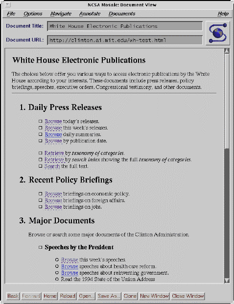
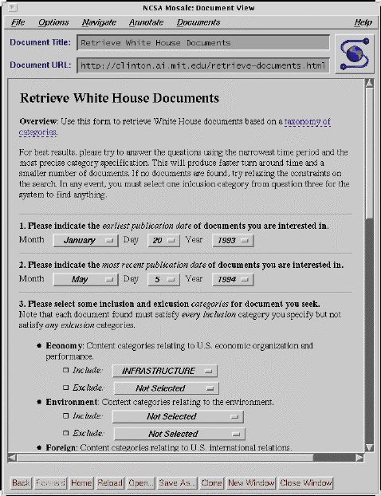
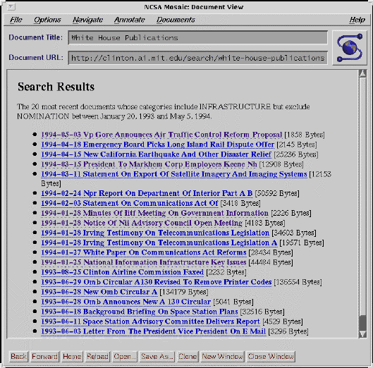
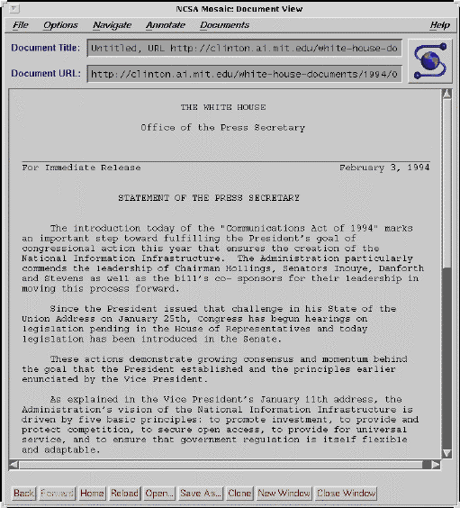
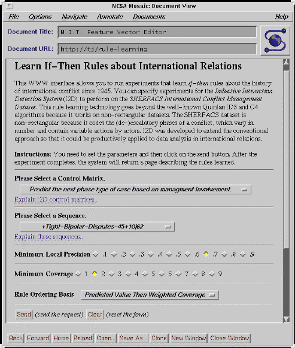
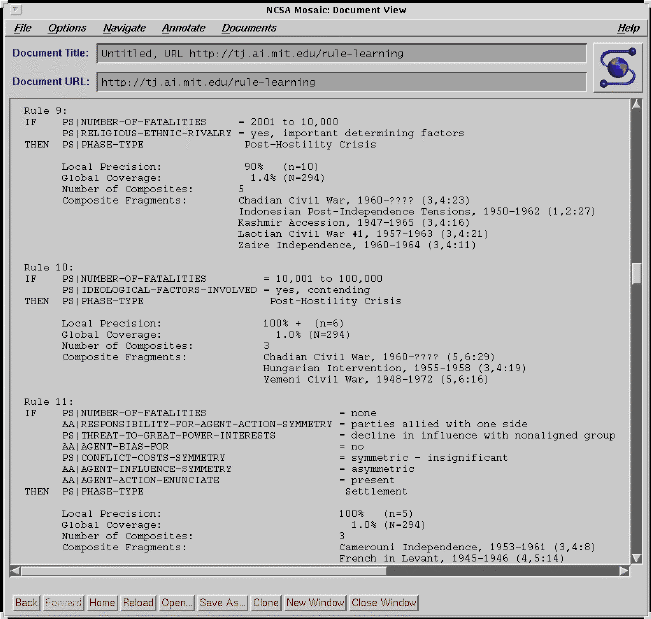
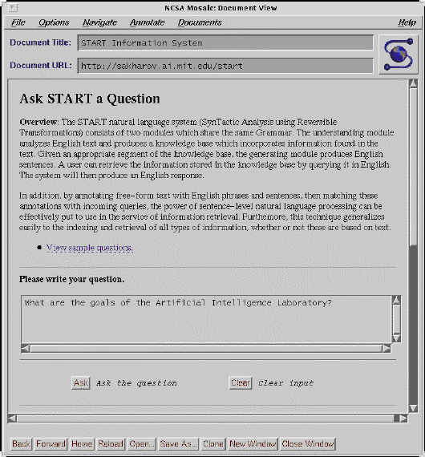
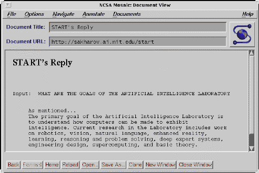

The page for retrieving documents offers a variety of way to access White House Electronic Publications. It includes a number of standing search URLs that automatically run a search when the user clicks on them.

A forms-based interface to boolean keyword search is not only easier to use, but also makes it impossible for users to mispecify searches syntactically, if not semantically.

After running a successful search, the user sees this page of results, which are generated on the fly from document records in a persistent-object database accessible to the server.

Clicking on a title of brings up the document.

This page allows the user learn if-then rules about international conflicts by selecting a collection of cases and specifying a control matrix to guide the rule learning experiment. The control matrix tells the system which independent variables to examine as it looks for rules that predict dependent variable values.

The rule learner first builds a decision tree and then converts the branches of the tree into a series of rules. This page shows several rules found during the experiment specified in the previous screen.

The user asks a question about the M.I.T. Artificial Intelligence Laboratory.

After parsing and representing the question, the START system finds the answer and returns it on a Web page.
